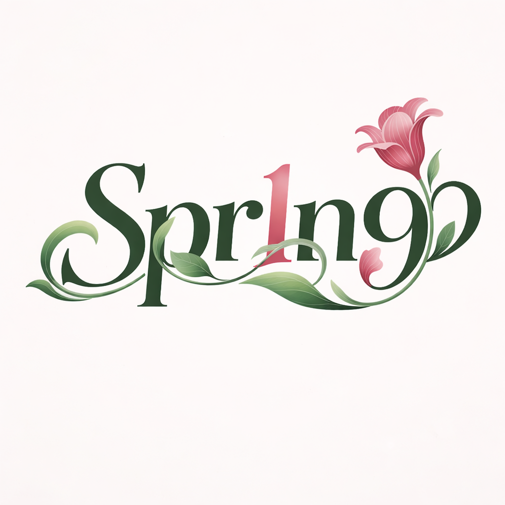

【讣告】我们怀着极其沉痛且破碎的心情，正式向社会各界及每一位关心、爱护她的朋友告知：Spr1n9组合成员、我们最深爱的家人林爱星，于今日早间永远地离开了这个世界。
经医护人员全力抢救，终因伤势过重，这颗曾在舞台上拼尽全力闪耀、曾用最纯粹的笑容温暖过无数疲惫灵魂的星辰，在今晨停止了呼吸。
爱星不仅是追求完美的偶像，更是我们生活中无法替代的伙伴、挚友与家人。在每一个挥洒汗水的练习室深夜，在每一次并肩作战的舞台背后，她始终以最坚韧的意志和最温柔的内心支持着身边的每一个人。我们从未预料过，命运会以这样残酷且仓促的方式强行收回她的光芒。这种空洞与悲伤，非笔墨所能形容。
此刻，整个组合都仿佛失去了色彩。我们失去了最珍视的一抹亮色，而世界也失去了一个温柔的灵魂。
愿星辰长眠，愿她所去往的地方只有永恒的宁静与自由，不再有刺骨的长夜、不再有无法言说的疲惫与束缚。公司目前正全力协助家属处理相关后续事宜。星辰虽陨落于人间，但她的光，将永远镌刻在每一个深爱过她的人心中。爱星，一路走好。

Spr1n9官方微博
N
头号新闻
#林爱星自杀# 独家：Spr1n9成员林爱星于今日早晨6:00在飞凰大酒店坠楼，警方已封锁现场。
Spr1n9_林爱星
新剧《致无畏的你》杀青啦！再见知遥~感谢剧组老师们，感谢遇见，也期待与大家见面！💪